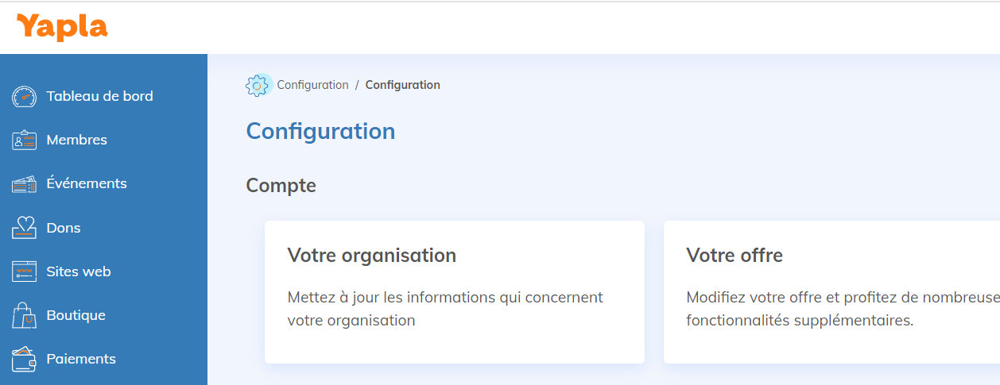
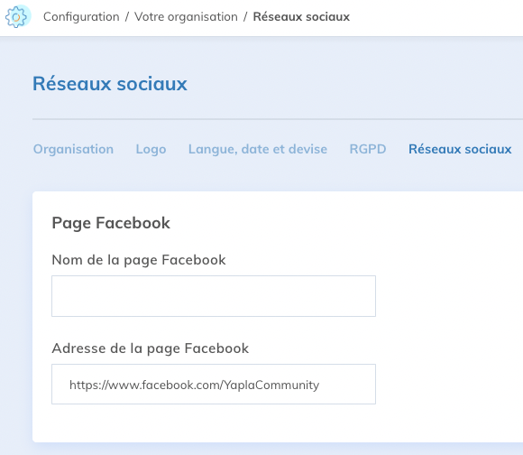
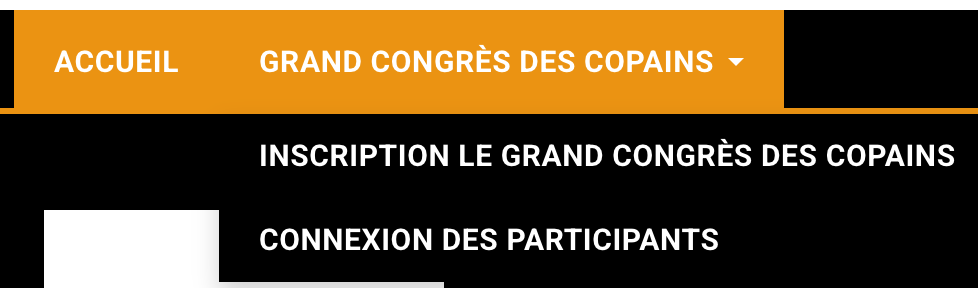
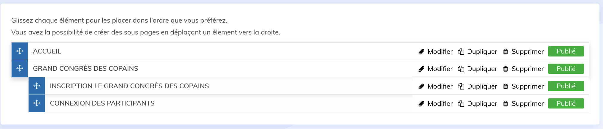
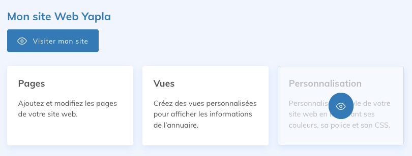

Pour une association, le site internet, même très simple, est un bon moyen d’assurer sa présence et sa visibilité en ligne. Yapla offre la possibilité de créer facilement une page vitrine qui rassemble vos informations essentielles, sans recourir à de la programmation.
Avec votre site, vous pouvez présenter votre mission et vos services. Les participants à vos événements, les membres et les donateurs peuvent ainsi savoir à qui ils ont affaire, ce qui est essentiel pour créer un lien de confiance.
Créer ce site avec Yapla est aussi très utile si vous comptez utiliser plusieurs fonctionnalités de la plateforme. Par exemple, si vous avez l’intention de créer un événement ou bien de gérer vos membres avec Yapla, il est beaucoup plus simple de rassembler ces pages au même endroit.
Note : si vous désirez créer un site plus riche en contenu avec Yapla, nous vous recommandons aussi de consulter cet article : Planifier la création de votre site web Yapla.
Créer un site simple, en quoi ça consiste?
Vous n’avez pas besoin d’avoir un site très complexe visuellement. L’important est d’y retrouver tout ce qui vous caractérise et vous permet de faire avancer votre mission. En voici quelques exemples :
- le logo et les couleurs de votre association
- un menu
- un texte sur votre mission et vos services
- une campagne d’adhésion et/ou de dons
- la liste de vos événements
- des liens vers vos réseaux sociaux.
En complément de vos réseaux sociaux et de vos newsletters, la création de contenu sur votre site vous permet d’améliorer petit à petit votre référencement naturel. Votre site peut assurer la liaison entre ces canaux de communication.
Voici comment créer votre site personnalisé.
Étape 1 : Vérifiez votre logo et les adresses de vos réseaux sociaux
Avant de passer à la création de votre site, assurez-vous que votre logo et vos réseaux sociaux figurent bien dans les renseignements de votre compte Yapla. Ces renseignements vont figurer sur votre site vitrine, il est donc très important qu’ils soient à jour.
Pour ce faire, rendez-vous dans la fonctionnalité Configuration depuis votre Tableau de bord. Cliquez ensuite sur la tuile Votre organisation.

La nouvelle page qui s’affiche à l’écran vous offre plusieurs onglets, au travers desquels vous pouvez ajouter votre logo ainsi que les adresses de vos réseaux sociaux.

Étape 2 : Créer le site Web
Cliquez sur la fonctionnalité Site Web dans la colonne de gauche, puis cliquez sur le bouton Ajouter un site Web.
Une fois votre site créé, un message vous demande si vous souhaitez ajouter une page d’accueil. En acceptant, la première page de votre site est automatiquement créée.
Étape 3 : Personnalisez le contenu
Par défaut, le site créé comporte les modules suivants :
- Entête (avec votre logo)
- Menu (avec la liste de vos pages)
- Bannière
- Contenu personnalisé
- Pied de page (avec les liens vers vos réseaux sociaux)
Liste des pages
La liste des pages vous permet d'organiser vos pages et de créer des onglets et des sous-onglets au menu de votre site web. Dans la liste des pages, glissez les pages pour les mettre en retrait sous une page souhaitée. Si vous souhaitez cacher une page du menu de votre site, sélectionnez-la, rendez-vous dans l'onglet Configuration et cochez le paramètre Ne pas afficher cette page dans le menu de votre site web.

Notez que la page placée en haut de la liste définira la page d'accueil du site web. Assurez-vous de glisser la page d'accueil souhaitée en haut de la liste. Pour modifier le contenu d’une page, cliquez sur celle-ci.

Vous pouvez alors modifier le contenu de la page de deux façons :
- au travers du menu Édition, qui donne un aperçu de la page telle que vos visiteurs la verront
- ou bien en cliquant sur le menu Structure, qui affiche seulement le squelette de la page, contenant la liste des modules.
Étape 4 : Modifiez la bannière
La bannière s’affiche entre le menu et votre texte principal. Vous pouvez la personnaliser avec vos propres images et votre texte.
Pour modifier la bannière, cliquez sur cette dernière dans l’éditeur de votre page. Un panneau s’ouvre ensuite, d’où vous pouvez cliquer sur les configurations.
À cet endroit, vous pouvez changer la bannière en choisissant parmi les images proposées, ou en sélectionnant votre propre image.
Attention : puisque la bannière par défaut est sombre, le texte est blanc dans l’éditeur. Il n’est donc pas visible. Vous pouvez cependant le voir en le sélectionnant avec votre curseur.

Étape 5 : Ajoutez votre texte
Une fois la bannière ajustée, cliquez sur la section qui suit pour modifier votre texte de bienvenue.
Il est important d’avoir du texte sur la page d’accueil, pour présenter le site à vos visiteurs, mais aussi pour aider son référencement sur les moteurs de recherche.
Vous pouvez utiliser cette section pour présenter votre association, y parler de votre mission et de vos valeurs.
Attention : le texte est en blanc par défaut, vous pouvez le saisir dans l'éditeur.
 Étape 6 : Changez les couleurs et la police
Étape 6 : Changez les couleurs et la police
Une fois votre contenu en place, il ne vous reste qu’à en personnaliser l’apparence.
Dans la page principale de votre site, cliquez sur la tuile Personnalisation, pour accéder aux couleurs et polices disponibles.

Choisissez des couleurs et polices qui s’harmonisent avec votre logo. Si vous avez des connaissances en CSS, pour pouvez également aller plus loin en personnalisant l’habillage de vos pages.
Étape 7 : Pour conclure : finalisez les configurations et créez un espace membre
Vous avez maintenant un site. Vous pouvez le visualiser en cliquant sur le bouton Visiter mon site. Si vous le souhaitez, vous pouvez maintenant créer un espace réservé à vos membres, et même créer une page pour votre prochain événement!
N’oubliez pas d’ajouter Google Analytics pour obtenir des statistiques sur vos visiteurs. Vous pouvez maintenant parler de votre site sur vos réseaux sociaux afin d’être trouvé par vos contacts, mais aussi par les robots des moteurs de recherche.

Commentaires
Vous devez vous connecter pour laisser un commentaire.